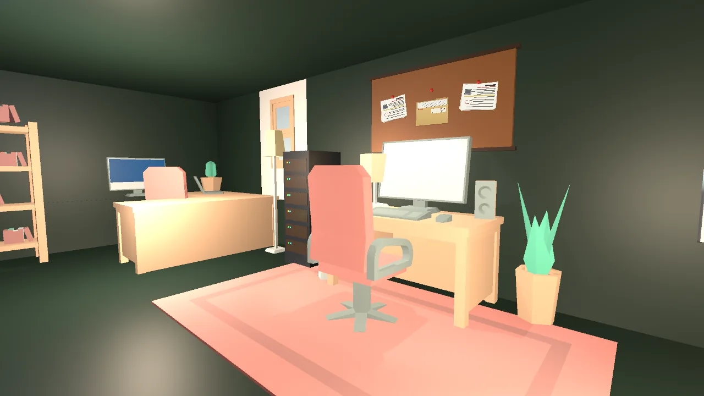

Practise safely
Let players handle realistic scam texts, emails, chats and web pages without real links or real risk.
Case study · Capstone project
A first-person 3D educational game that helps players recognise online scams, phishing messages, suspicious links and fraudulent digital communication, through interactive, investigation-based scenarios.

Screenshots are the room previews from the game's main menu. Gameplay video and a playable build will be added when available.
Online scams are a growing problem, and many people can't reliably tell a phishing message from a real one. Warning lists are easy to forget; practice is not.
Scam Sense lets players practise on safe, fictional messages and explains why something is suspicious, not just that it is. It's aimed at students and general users who want basic cybersecurity awareness.
Let players handle realistic scam texts, emails, chats and web pages without real links or real risk.
Follow every answer with feedback that names the warning signs or the reassuring details.
Raise difficulty room by room, so players unlock harder cases as their accuracy improves.
Read the case briefing, then start the investigation in a 3D room.
Open texts on the in-game phone, or emails and web pages on a computer. Click highlighted senders, phrases and links to inspect them; clues go into an Evidence Notebook. Links are simulated and never opened.
Answer Scam or Legitimate. Feedback explains the answer and shows which evidence you found, missed or wrongly used.
Each message has its own reading allowance based on its length and number of details. A timer-based speed bonus never replaces base points, and the timer pauses while you read a new finding.
Trusting a scam triggers a simulated security incident; flagging a genuine message shows what supported it. Every card names the clue that was overlooked.
Reach a room's passing score to unlock the next. Stars, career XP, ranks and achievements track improvement over time.
Progress saves locally. Supabase email accounts and cloud sync are implemented in code with row-level security; end-to-end testing is still in progress.
| # | Room | Setting | Messages |
|---|---|---|---|
| 1 | The First Case | A home; texts and emails arrive as you explore | 5 |
| 2 | The Investigation | Cybersecurity office with an evidence board | 7, including a work chat |
| 3 | The Digital Trap | Dark operations room with a case-files computer | 6 |
| 4 | Digital Forensics Lab | Evidence stations and a final multi-evidence case | 8, including a web page |
| 5 | The Compromised Campus Network | 36-seat computer lab, five flagged workstations | 6 |
All people, brands and domains in the game are fictional (reserved .example domains).
Scam Sense is a four-person team project. I'm listed on the team roster as Project Manager, Game Designer and Game Developer. From the repository history:
Committed the project's first set of 21 C# scripts (about 3,000 lines) to the repository, covering:
Created the repository's README and its Unity .gitignore, and maintain the team roster and project description.
Later systems, such as message investigation, Supabase accounts, Levels 3 to 5 and the performance work, were committed by teammates.
Documented in the repository's design notes.
Profiling showed the email computer rebuilt its whole inbox UI on every event, and UI fonts rasterised new characters at runtime.
FixInbox rows are reused, previews are capped, fonts are pre-filled with the glyphs the game uses, and per-frame allocations were removed. Results were measured in standalone builds.
A fixed timer punished long messages and careful readers.
FixPer-message reading allowances based on word count and clickable details, with capped overtime and a timer that pauses while reading findings.
A plain "wrong" gave players no reason to change their approach.
FixDistinct, explained consequences for trusting a scam, a false alarm and a missed final case, with short, non-jarring effects.
A cloud-connected game risks committing keys to a public repository.
FixThe client uses only the public publishable key from a git-ignored file, refuses secret keys, and the database uses row-level security so players can only access their own rows.
A downloadable Windows build is planned; no playable demo is published yet.